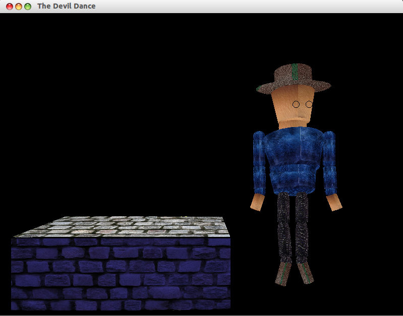

Dancing Man - Part 1
Developed By :
Shivam H Prasad - 110050041
NIshit Bhandari - 110050026
Link to Part 2 Report
Link to Part 3 Report
Introduction :
Dancing Man is a modelling project. This includes modelling a dancing human figure and some other non-living objects like room, furniture, lights etc and then animating them using openGL. This is the first part of the project in which we have modelled a Music Box and a Human Figure and their 3D movements.
Implementation :
-
OpenGL graphics library is used to model all the objects.
-
Music Box is created using quadrilaterals. Each face of the box is a rectangle.
-
Apart from the base of the box there is an extra rectangular object that acts as a rising platform hidden inside box which rises when the box is opened.
-
Human figure is created using spheres, solid cylinders, frustums etc.
-
All the joints in the body which enable movement are modelled using spheres i.e. movement is restricted to be only about the spheres.
-
Bones and neck are modelled using solid cylinders whereas head is a frustum.
-
Movement of human figure is restricted to resemble actual human body movements as closely as possible.
-
Human figure can be made to make movements in 3D space using keyboard shortcuts.
Heirarichal Model :
Class Structure :
-
box class
- Used to create the box made up of rectangles.
- Each face of the box is a rectangle.
- GLuint object to contain texture to be applied on the box.
- Display List containing building blocks of the box i.e. rectangles.
- Method to open the lid of box and bring up the hidden platform.
-
draw class
- Used to make various figures like sphere, sylinder, disk etc.
- All the parts of human body are made using methods of draw class.
-
head class
- Used to make head of human figure which is a frustum.
- GLuint object to contain texture to be applied on the head.
- Display List containing building blocks of the head i.e. frustum.
-
neck class
- Used to make neck of human figure which is a solid cylinder.
- GLuint object to contain texture to be applied on the neck.
- Display List containing building blocks of the neck i.e. cylinder.
-
joint class
- Used to make joints in human figure which is a sphere.
- Various human body parts are made using joint class : shoulder, mid-torso, elbow, wrist, hip, knee, ankle
- GLuint object to contain texture to be applied on the joint.
- Display List containing building blocks of the neck i.e. sphere.
-
torso class
- Used to make upper and lower torso of human figure which is are frustums.
- GLuint object to contain texture to be applied on the torso.
- Display List containing building blocks of the neck i.e. frustum.
-
arm class
- Used to make arms of human figure which are solid cylinder.
- GLuint object to contain texture to be applied on the arms.
- Display List containing building blocks of the arms i.e. cylinder.
-
hand class
- Used to make hands of human figure which are solid cylinder.
- GLuint object to contain texture to be applied on the hands.
- Display List containing building blocks of the hands i.e. cylinder.
-
palm class
- Used to make palms of human figure which are solid cylinder.
- GLuint object to contain texture to be applied on the palms.
- Display List containing building blocks of the palms i.e. cylinder.
-
thigh class
- Used to make thighs of human figure which are solid cylinder.
- GLuint object to contain texture to be applied on the thighs.
- Display List containing building blocks of the thighs i.e. cylinder.
-
leg class
- Used to make legs of human figure which are solid cylinder.
- GLuint object to contain texture to be applied on the legs.
- Display List containing building blocks of the legs i.e. cylinder.
-
feet class
- Used to make feet of human figure which are solid cylinder.
- GLuint object to contain texture to be applied on the feet.
- Display List containing building blocks of the feet i.e. cylinder.
-
body class
- Contains objects of all the previous classes except box class to make various body parts.
- Method to call appropriate functions of objects making the body parts in order to make the entire body.
- showBody method that renders all the body parts by calling their display lists.
- showBody follows appropriate heirarichal order so as model actual human body movements.
Interface Settings :
- Press c to initialize the scene or to reset the scene.

- Press o to open the box and O to close it.

- Press x, X, y, Y, z, Z to make body movements in various directions.
- Press n to enable movement about neck.
- Press s or S to enable movement about left or right shoulder.

- Press l or L to enable movement about left or right elbow.

- Press w or W to enable movement about left or right wrist.

- Press t to enable upper torso movement.
- Press T to enable lower torso movement.
- Press h or H to enable movement about left or right hip.

- Press k or K to enable movement about left or right knee.

- Press a or A to enable movement about left or right ankle.

- Press ESC to quit the program.